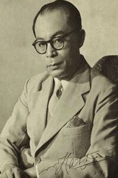

Moh. Hatta
Dalam perumusan dasar negara Moh. Hatta terkenal dengan upaya lobi
yang dilakukan dalam perumusan Piagam jakarta. Selain itu, Moh. Hatta
juga menyumbangkan pemikirannya terkait dasar negara. Menurut Muh.
Hatta Pancasila sebenarnya tersusuan atas 2 dasar. Pertama, berkaitan
dengan moral, yaitu ketuhanan yang maha Esa. kedua, berkaitan dengan
aspek politik, yaitu kemanusiaan, persatuan Indonesia, demokrasi
kerakyatan, dan keadilan sosial. Pemikiran Moh. Hatta jika digambarkan
dalam bagan sebagai berikut :